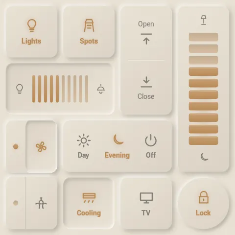
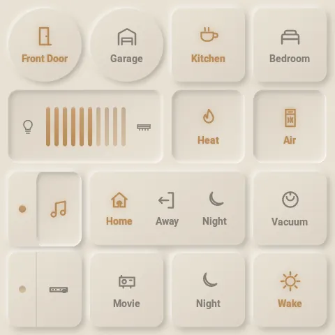
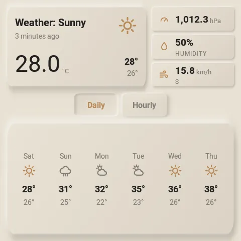
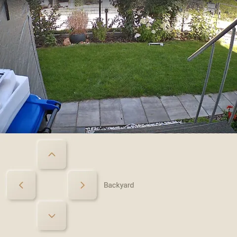
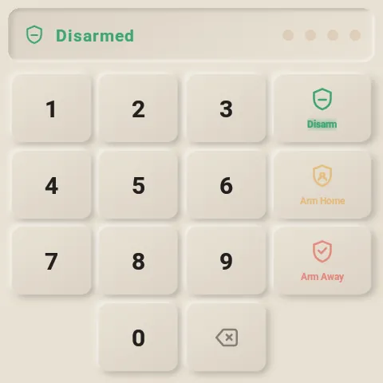
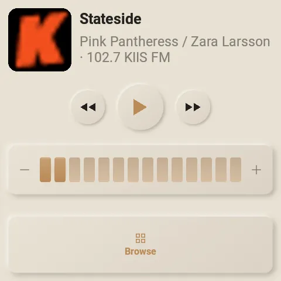
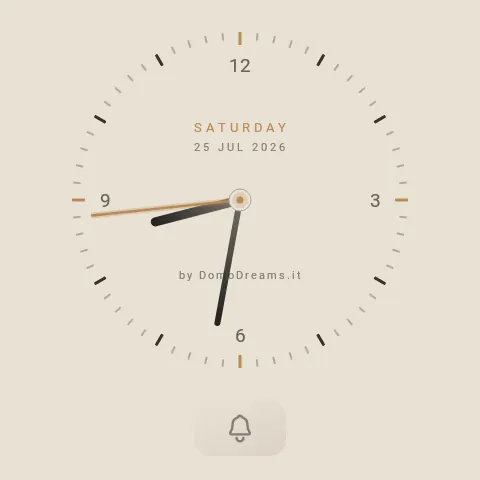

The 7 pages here are just one example layout — your panel can have as many
as you like — shown in all 32 curated styles. Pick one from the menu and every screen
switches at once.
32 styles · 7 example pages

Grid
Living room
A whole room on one screen: switches, two column dimmers showing their level, roller shutters as up/down keys, and a scene selector.
button
vertical dimmer
roller shutter (split)
scenes (switcher)

Grid
Home
A richer vocabulary: round buttons, a horizontal dimmer, a live-state rocker and a mode switcher — with a text readout tile along the bottom showing live sensor values.
round button
horizontal dimmer
rocker
switcher
text readout

Weather
Weather
A meteo page mirrored from a Home Assistant weather entity: current conditions with pressure, humidity and wind, plus a daily / hourly forecast. Two layouts to choose from.
current conditions
daily / hourly forecast
two layouts

Camera
Cameras
Live MJPEG video from a Home Assistant camera, with a PTZ D-pad. The panel keeps no credentials.
live stream
PTZ
multi-camera

Security
Security
The native Alarmo keypad: live state, a PIN entered on the panel and never stored, arm / disarm per area.
Alarmo keypad
live state
arm / disarm

Music
Music
The panel becomes a Music Assistant speaker: cover art, transport, volume, and library browse.
Music Assistant player
volume
browse

Clock
Clock
An analog face that here follows the panel’s style. It’s also the screensaver when the panel rests.
analog
follows the style
screensaver
Rendered live on a Sonoff NSPanel Pro
(PX30 · mdpi 480×480) · 32 styles × 7 example pages.